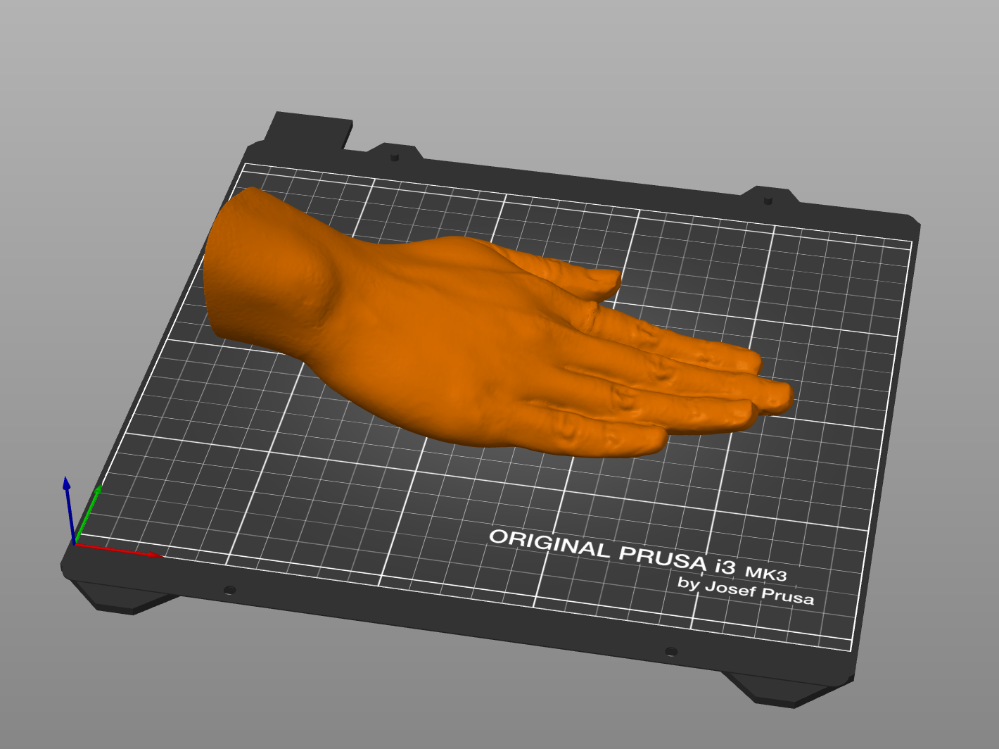
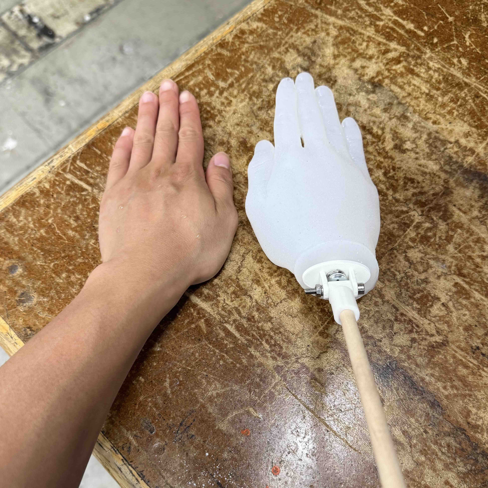

ERS Slapping Robot
(In progress)
Description:
The game of Egyptian Rat Screw is a speed-based card game which involves dealing and slapping cards. I loved this game growing up and fondly recall playing with my friends on the bus ride to math tournaments. My goal is to build a robot to play against.
The slapping mechanism is controlled by a stepper motor with a half-gear which slips and allows the spring to quickly pull down the arm. An ESP32-CAM is mounted separately and scans for QR codes on the cards. In the future, this may be changed to full image recognition. The video above shows the slapping mechanism. A flexible hand will be mounted at the end of the rod (see below).

